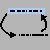

The "Switch" function changes the currently selected subtree into another subtree which would also be valid at its present location. It is activated in the "Edit" menu or by the button

. The user is presented with a list of replacement choices. Any subtree chosen will then replace the selected subtree with a new subtree with default values. Note that this also applies if the same name is picked as the currently selected subtree, and it will be replaced with a default subtree with its name.